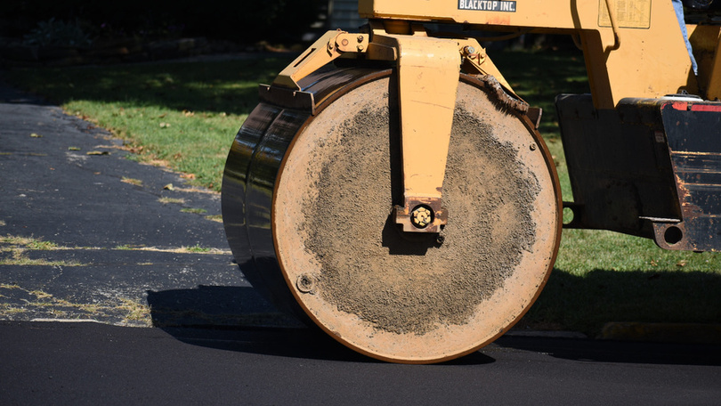
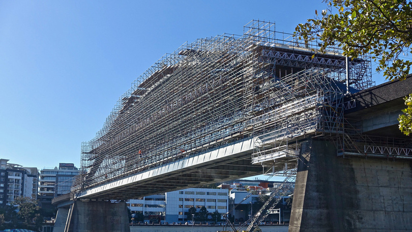
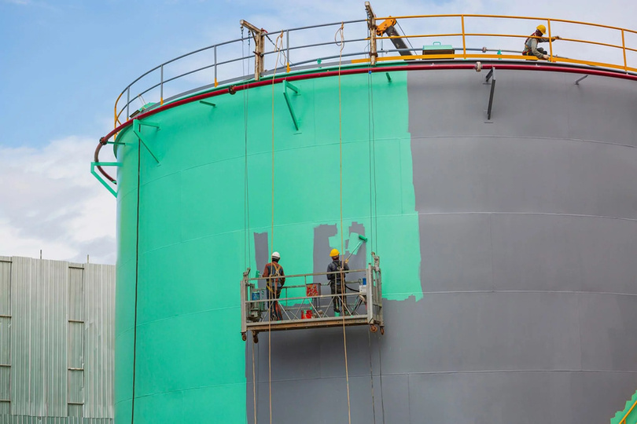

Site preparation and land development are critical components of any construction project. These services ensure that the land is properly cleared, shaped and fortified to support future structures, utilities and infrastructure. With a focus on safety, efficiency and sustainability, we provide comprehensive solutions for transforming raw land into a functional and ready-to-build site.

Foundation and structural work ensures strong, durable bases for industrial and commercial structures. We design and build heavy-duty foundations, reinforced concrete and steel structures, tailored to each project’s needs. With a focus on safety, reliability and advanced engineering, we provide robust, long-lasting foundations that support large buildings and heavy machinery.
Lightweight, durable steel systems engineered off site and assembled quickly on site — backed by detailing, structural design, dedicated project management and full MEP integration.


Designing and manufacturing lightweight steel structures that are pre-cut, pre-drilled and pre-assembled for easy on-site construction. These components serve applications from residential to industrial projects, offering strength, durability and faster installation. Pre-fabricated gauge steel systems are cost-effective, highly customizable and ideal for creating efficient, sustainable structures.
Design and construction of structures using thin, cold-formed steel components. These lightweight yet strong frames are ideal for residential, commercial and industrial buildings, offering quick assembly, flexibility in design and excellent durability. Light gauge steel is resistant to corrosion, fire and pests, making it a reliable and cost-effective solution for modern construction projects.
The detailed drawings and specifications required for the fabrication and assembly of steel structures. This process involves creating comprehensive and precise plans that outline how each steel component should be manufactured, assembled and connected to other parts of the structure.
Planning and creating detailed specifications for the steel framework of a building or infrastructure, ensuring that the steel elements provide necessary support and stability and meet safety, performance and aesthetic standards.
Overseeing and coordinating all aspects of a steel construction project from start to finish. It encompasses planning, organizing and controlling resources and processes to ensure the project is completed on time, within budget and to the required quality standards.
The installation and integration of Mechanical, Electrical and Plumbing systems within steel-framed buildings or structures. These services ensure the building’s systems are properly designed, installed and coordinated with the steel structure and other building elements.

Durable internal roads, access pathways, parking areas and loading bays engineered for industrial traffic. We design for load, drainage and traffic flow, then maintain the surfaces so they keep performing.

Our structural repairs and maintenance services ensure that your buildings and critical infrastructure remain safe, functional and efficient over time — from regular inspections through to rehabilitation, reinforcement and upgrading of existing civil structures.

High-performance flooring for industrial, commercial and institutional environments — from durable coatings that withstand heavy traffic and chemical exposure to anti-slip and chemical-resistant solutions that keep surfaces smooth, safe and long-lasting.

Surface preparation, high-performance protective coatings and fire-resistant solutions tailored to manufacturing, oil and gas, chemical processing and other industries — focused on longevity, safety and high-quality finishes.
From raw land to a finished, protected structure — talk to us about scope, sequencing and budget.